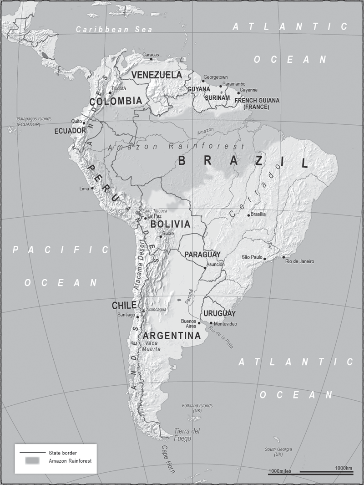
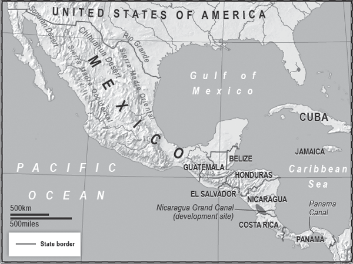

‘We like to be called the “continent of hope” . . .
This hope is like a promise of heaven, an IOU
whose payment is always put off.’
Pablo Neruda, Chilean poet and Nobel laureate

LATIN AMERICA, PARTICULARLY ITS SOUTH, IS PROOF THAT YOU can bring the Old World’s knowledge and technology to the new, but if geography is against you, then you will have limited success, especially if you get the politics wrong. Just as the geography of the USA helped it become a great power, so that of the twenty countries to the south ensures that none will rise to seriously challenge the North American giant this century nor come together to do so collectively.
The limitations of Latin America’s geography were compounded right from the beginning in the formation of its nation states. In the USA, once the land had been taken from its original inhabitants, much of it was sold or given away to small landholders; by contrast, in Latin America the Old World culture of powerful landowners and serfs was imposed, which led to inequality. On top of this, the European settlers introduced another geographical problem that to this day holds many countries back from developing their full potential: they stayed near the coasts, especially (as we saw in Africa) in regions where the interior was infested by mosquitos and disease. Most of the countries’ biggest cities, often the capitals, were therefore near the coasts, and all roads from the interior were developed to connect to the capitals but not to each other.
In some cases, for example in Peru and Argentina, the metropolitan area of the capital city contains more than 30 per cent of the country’s population. The colonialists concentrated on getting the wealth out of each region, to the coast and on to foreign markets. Even after independence the predominantly European coastal elites failed to invest in the interior, and what population centres there are inland remain poorly connected with each other.
At the beginning of the 2010s it was fashionable among many business leaders, professors and media analysts to argue passionately that we were at the dawn of the ‘Latin American decade’. It has not come to pass, and although the region has as yet unfulfilled potential, it will constantly be fighting against the hand it was dealt by nature and history.
Mexico is growing into a regional power, but it will always have the desert wastelands in its north, its mountains to the east and west and its jungles in the south, all physically limiting its economic growth. Brazil has made its appearance on the world stage, but its internal regions will remain isolated from each other; and Argentina and Chile, despite their wealth of natural resources, will still be far further away from New York and Washington than are Paris or London.
Two hundred years after the beginning of the struggle for independence, the Latin American countries lag far behind the North Americans and the Europeans. Their total population (including the Caribbean) is over 600 million, and yet their combined GDP is equivalent to that of France and the UK, which together comprise about 125 million people. They have come a long way since colonialism and slavery. There is still a long way to go.
Latin America begins at the Mexican border with the USA and stretches southwards 7,000 miles through Central America, and then South America, before ending at Tierra del Fuego on Cape Horn where the world’s two great oceans, the Pacific and the Atlantic, meet. At its widest point, west to east, from Brazil across to Peru, it is 3,200 miles. On the western side is the Pacific, on the other the Gulf of Mexico, the Caribbean Sea and the Atlantic. None of the coastlines have many natural deep harbours, thus limiting trade.
Central America is hill country with deep valleys and at its narrowest point is only 120 miles across. Then, running parallel to the Pacific for 4,500 miles, is the longest continuous mountain chain in the world – the Andes. They are snow-capped along their entire length and mostly impassable, thus cutting many regions in the west of the continent off from the east. The highest point in the Western Hemisphere is here – the 22,843-foot Aconcagua Mountain – and the waters tumbling down from the mountain range are a source of hydroelectric power for the Andean nations of Chile, Peru, Ecuador, Colombia and Venezuela. Finally the land descends, forests and glaciers appear, we are into the Chilean archipelago and then – land’s end. The eastern side of Latin America is dominated by Brazil and the Amazon river, the second-longest in the world after the Nile.
One of the few things the countries have in common is language based on Latin. Spanish is the language of almost all of them, but in Brazil it is Portuguese, and in French Guiana – French. But this linguistic connection disguises the differences in a continent that has five different climatological regions. The relative flatland east of the Andes and temperate climate of the lower third of South America, known as the Southern Cone, are in stark contrast to the mountains and jungle further north and enable agricultural and construction costs to be reduced, thus making them some of the most profitable regions on the entire continent – whereas Brazil, as we shall see, even has difficulty moving goods around its own domestic market.
Academics and journalists are fond of writing that the continent is ‘at a crossroads’ – as in about to embark at last on its great future. I would argue that, geographically speaking, it is less at a crossroads than at the bottom of the world; there’s a lot going on all over this vast space, but the problem is, much of it is going on a long way from anywhere other than itself. That may be considered a Northern Hemispheric view, but it is also a view of where the major economic, military and diplomatic powers are situated.
Despite its remoteness from history’s major population centres, there have been people living south of what is now the Mexico–USA border for about 15,000 years. They are thought to have originated from Russia and crossed the Bering Strait on foot at a time when it was still land. The present-day inhabitants are a mixture of Europeans, Africans, indigenous tribes and the Mestizo population, who are of European and native American descent.
This mix can be traced back to the Treaty of Tordesillas between Spain and Portugal in 1494, one of the early examples of European colonialists drawing lines on maps of faraway places about which they knew little – or, in this case, nothing. As they set off westward to explore the oceans, the two great European sea powers agreed that any land discovered outside Europe would be shared between them. The Pope agreed. The rest is a very unfortunate history in which the vast majority of the occupants of the lands now called South America were wiped out.
The independence movements began in the early 1800s, led by Simón Bolívar of Venezuela and José de San Martín of Argentina. Bolivar in particular is etched in the collective consciousness of South America: Bolivia is named in his honour, and the left-leaning countries of the continent are loosely tied in a ‘Bolivarian’ ideology against the USA. This is a fluctuating set of anti-colonialist/pro-socialist ideas which often stray into nationalism as and when it suits the politicians who espouse them.
In the nineteenth century many of the newly independent countries broke apart, either through civil conflict or cross-border wars, but by the end of that century the borders of the various states were mostly set. The three richest nations – Brazil, Argentina and Chile – then set off on a ruinously expensive naval arms race, which held back the development of all three. There remain border disputes throughout the continent, but the growth of democracy means that most are either frozen or there are attempts to work them out diplomatically.
Particularly bitter is the relationship between Bolivia and Chile, which dates back to the 1879 War of the Pacific in which Bolivia lost a large chunk of its territory, including 250 miles of coastline, and has been landlocked ever since. It has never recovered from this blow, which partially explains why it is among the poorest Latin American countries. This in turn has exacerbated the severe divide between the mostly European lowlands population and the mostly indigenous peoples of the highlands.
Time has not healed the wounds between them, nor those between the two countries. Despite the fact that Bolivia has the third-largest reserves of natural gas in South America it will not sell any to Chile, which is in need of a reliable supplier. Two Bolivian presidents who toyed with the idea were thrown out of office and the current president, Evo Morales, has a ‘gas to Chile’ policy consisting of a ‘gas for coastline’ deal, which is dismissed by Chile despite its need for energy. National pride and geographical need on both sides trump diplomatic compromise.
Another border dispute dating back to the nineteenth century is indicated by the borders of the British territory of Belize and neighbouring Guatemala. They are straight lines, such as we have seen in Africa and the Middle East, and they were drawn by the British. Guatemala claims Belize as part of its sovereign territory but, unlike Bolivia, is unwilling to push the issue. Chile and Argentina argue over the Beagle Channel water route, Venezuela claims half of Guyana, and Ecuador has historical claims on Peru. This last example is one of the more serious land disputes in the continent and has led to three border wars over the past seventy-five years, the most recent being in 1995; but again, the growth of democracy has eased tensions.
The second half of the twentieth century saw Central and South America become a proxy battlefield of the Cold War with accompanying coups d’état, military dictatorships and massive human rights abuses, for example in Nicaragua. The end of the Cold War allowed many nations to move towards democracy and, compared to the twentieth century, relations between them are now relatively stable.
The Latin Americans, or at least those south of Panama, mostly reside on, or near, the western and eastern coasts, with the interior and the freezing cold far south very sparsely populated. South America is in effect a demographically hollow continent and its coastline is often referred to as the ‘populated rim’. This is less true of Central America and especially Mexico, where the populations are more equally distributed; but Mexico in particular has difficult terrain, which limits its ambitions and foreign policies.
In its far north Mexico has a 2,000-mile-long border with the USA, almost all of which is desert. The land here is so harsh that most of it is uninhabited. This acts as a buffer zone between it and its giant northern neighbour – but a buffer that is more advantageous to the Americans than the Mexicans due to the disparity in their technology. Militarily, only US forces could stage a major invasion across it; any force coming the other way would be destroyed. As a barrier to illegal entry into the USA it is useful, but porous – a problem with which successive US administrations will have to deal.
All Mexicans know that before the 1846–8 war with the United States the land which is now Texas, California, New Mexico and Arizona was part of Mexico. The conflict led to half of Mexico’s territory being ceded to the USA. However, there is no serious political movement to regain the region and no pressing border dispute between the two countries. Throughout most of the twentieth century they squabbled over a small piece of land after the Rio Grande changed course in the 1850s, but in 1967 both sides agreed the area was legally part of Mexico.
By the middle of the twenty-first century Hispanics are likely to be the largest ethnic group in the four US states listed above, and many will be of Mexican origin. There may eventually be Spanish-speaking political movements on both sides of the US–Mexican border calling for reunification, but tempering this would be the fact that many US Latinos will not have Mexican heritage, and that Mexico is unlikely to have anything approaching the living standards of the US. The Mexican government struggles to control even its own territory – it will not be in a position to take on any more in the foreseeable future. Mexico is destined to live in the USA’s shadow and as such will always play the subservient role in bilateral relations. It lacks a navy capable of securing the Gulf of Mexico or pushing out into the Atlantic, and so relies on the US navy to ensure the sea lanes remain open and safe.
Private companies from both nations have set up factories just south of the border to cut costs in labour and transport, but the region is hostile to human existence and will remain the buffer land across which many of the poor of Latin America will continue to cross as they seek entry, legal or illegal, to the Promised Land to the north.
Mexico’s major mountain ranges, the Sierra Madres, dominate the west and east of the country and between them is a plateau. In the south, in the Valley of Mexico, is the capital – Mexico City – one of the world’s mega capital cities with a population of around 20 million people.
On the western slopes of the highlands and in the valleys the soil is poor, and the rivers of limited assistance in moving goods to market. On the eastern slopes the land is more fertile, but the rugged terrain still prevents Mexico from developing as it would like. To the south lie the borders with Belize and Guatemala. Mexico has little interest in expanding southward because the land quickly rises to become the sort of mountainous terrain it is difficult to conquer or control. Extending into either country would not enlarge the limited amount of profitable land Mexico already has. It has no ideological territorial ambitions and instead concentrates on trying to develop its limited oil-producing industry and attracting more investment into its factories. Besides, Mexico has enough internal problems to cope with, without getting into any foreign adventures – perhaps none greater than its role in satisfying the Americans’ voracious appetite for drugs.
The Mexican border has always been a haven for smugglers, but never more so than in the last twenty years. This is a direct result of the US government’s policy in Colombia, 1,500 miles away to the south.
It was President Nixon in the 1970s who first declared a ‘War on Drugs’, which, like a ‘War on Terror’, is a somewhat nebulous concept in which victory cannot be achieved. However it wasn’t until the early 1990s that Washington took the war directly to the Colombian drug cartels with overt assistance to the Colombian government. It also had success in closing down many of the air and sea drug routes from Colombia into the USA.
The cartels responded by creating a land route – up through Central America and Mexico, and into the American Southwest. This in turn led the Mexican drug gangs to get in on the action by facilitating the routes and manufacturing their own produce. The multibillion-dollar business sparked local turf wars, with the winners using their new power and money to infiltrate and corrupt the Mexican police and military and get inside the political and business elites.
In this there are parallels with the heroin trade in Afghanistan. Many of the Afghan farmers growing the poppy crop responded to NATO’s attempts to destroy their traditional way of making a living by either taking up arms or supporting the Taliban. It may be the government’s policy to wage a ‘War on Drugs’, but this does not mean that the orders are carried out at a regional level, which the Afghan drug lords have penetrated. So it is in Mexico.
Throughout history, successive governments in Mexico City have never had a firm grip on the country. Now its opponents, the drug cartels, have paramilitary wings which are as well armed as the forces of the state, often better paid, more motivated, and in several regions are regarded as a source of employment by some members of the public. The vast sums of money made by the gangs now swill around the country, much of it being washed through what appear on the surface to be legitimate businesses.
The overland supply route is firmly established, and the demand in the USA shows few signs of diminishing. All Mexican governments try to keep on the right side of their powerful neighbour and have responded to American pressure by waging their own ‘War on Drugs’. Here lies a conundrum. Mexico makes its living by supplying consumer goods to America, and as long as Americans consume drugs, Mexicans will supply them – after all, the idea here is to make things which are cheap to produce and sell them at prices higher than those in legal trade. Without drugs the country would be even poorer than it is, as a vast amount of foreign money would be cut off. With drugs, it is even more violent than it would otherwise be. The same is true of some of the countries to Mexico’s south.
Central America has little going for it by way of geography, but for one thing. It is thin. So far the only country to gain advantage from this has been Panama, but with the arrival of new money from China that may be about to change.

Central America could see many changes in the regions that are receiving Chinese investment, such as the development of the Nicaragua Grand Canal.
Modern technology means the Chinese can see from a glance at a satellite photograph the trade opportunities this thin stretch of land might bring. In 1513 the Spanish explorer Vasco Núñez de Balboa had to sail across the Atlantic, land in what is now Panama, then trek through jungles and over mountains before seeing before him another vast ocean – the Pacific. The advantages of linking them were obvious, but it was another 401 years before technology caught up with geography. In 1914 the newly built, 50-mile-long, American-controlled Panama Canal opened, thus saving an 8,000-mile journey from the Atlantic to the Pacific oceans and leading to economic growth in the canal region.
Since 1999 the canal has been controlled by Panama, but is regarded as a neutral international waterway which is safeguarded by the US and Panama navies. And therein, for the Chinese, lies a problem.
Panama and the USA are friends – in fact, such good friends that in 2014 Venezuela briefly cut ties with Panama, calling it a ‘US lackey’. The effect of the rhetoric of the increasingly embattled country’s Bolivarian revolutionary era is tempered by the knowledge that the United States is Venezuela’s most important commercial partner and that Venezuela supplies around 10 per cent of US oil imports. The energy trade between them is likely to fall as the effects of the US shale revolution kick in, but Beijing will be a willing importer of Venezuelan oil, and is working on how to get it to China without relying on the route through Panama.
China, as we saw in Chapter Two, has designs on being a global power and to achieve this aim it will need to keep sea lanes open for its commerce and its navy. The Panama Canal may well be a neutral passageway, but at the end of the day passage through it is dependent on American goodwill. So, why not build your own canal up the road in Nicaragua? After all, what’s $50 billion to a growing superpower?
The Nicaragua Grand Canal project is funded by a Hong Kong businessman named Wang Jing who has made a lot of money in telecommunications but has no experience of engineering, let alone masterminding one of the most ambitious construction projects in the history of the world. Mr Wang is adamant that the Chinese government is not involved in the project. Given the nature of China’s business culture and the participation of its government in all aspects of life, this is unusual.
The $50 billion cost estimate for the project, which is due for completion in the early 2020s, is four times the size of the entire Nicaraguan economy and forms part of the substantial investment in Latin America by China, which is slowly but steadily supplanting the USA as the region’s main trading partner. Exactly who is financially backing Mr Wang is unclear, but Nicaragua’s President Daniel Ortega signed up to the plan with alacrity and with scarcely a glance at the 30,000-plus people who may be required to move from their lands because of the project.
The former revolutionary socialist Sandinista firebrand now finds himself accused of being on the side of big business. The canal will split the country in two, and six municipalities will find themselves divided. There will only be one bridge across the canal along its entire length. Ortega must know he risks sowing the seeds of dissent, but argues that the project will bring tens of thousands of jobs and much-needed investment and revenue to the second-poorest country in the Western Hemisphere.
The Nicaraguan canal will be longer than the Panama and, crucially, will be significantly wider and deeper, thus allowing much bigger tankers and container ships through, not to mention large Chinese naval vessels. It will run directly east to west, whereas the Panama Canal actually runs north to south. The middle section will be dredged out of Lake Nicaragua, which has led environmentalists to warn that Latin America’s largest freshwater lake may become contaminated.
Given that the Panama Canal a few hundred miles to the south is being widened, sceptics ask why the Nicaraguan version is necessary. China will have control of a canal able to take bigger ships, which will help to guarantee the economies of scale only China is capable of. There are questions about the future profitability of the Nicaraguan canal – it may take decades to make money – but this is a project that appears to be more about the national interests of China than about commercial profit.
Gouging a link between two oceans out of a nation state is just the most visible sign of China’s investment in Latin America. We’ve grown used to seeing the Chinese as major players in Africa, but for twenty years now they have been quietly moving in south of the Rio Grande.
As well as investing in construction projects, China is lending huge sums of money to Latin American governments, notably those in Argentina, Venezuela and Ecuador. In return China will be expecting support in the United Nations for its regional claims back home, including the issue of Taiwan.
Beijing is also buying. The Latin American states have been picked off one by one by the USA, which prefers bilateral trade deals to doing business with the region as a whole, as they have to do with the EU. The Chinese are doing the same thing but at least offer an alternative, thus reducing the region’s dependency on the USA as its market. For example, China has now replaced the USA as Brazil’s main trading partner, and may do the same with several other Latin American countries.
The Latin American countries do not have a natural affinity with the USA. Relations are dominated by America’s starting position, laid out in the Monroe Doctrine of 1823 (as we have seen in Chapter Three) during President Monroe’s State of the Union address. The Doctrine warned off the European colonialists and said, in as many words, that Latin America was the USA’s backyard and sphere of influence. It has been orchestrating events there ever since and many Latin Americans believe the end results have not always been positive.
Eight decades after Monroe’s Doctrine, along came another president with ‘Monroe reloaded’. In a speech in 1904 Theodore ‘Teddy’ Roosevelt said: ‘In the Western Hemisphere the adherence of the United States to the Monroe Doctrine may force the United States, however reluctantly, in flagrant cases of [such] wrongdoing or impotence, to the exercise of an international police power.’ In other words, the USA could militarily intervene whenever it chose to in the Western Hemisphere. Not including the funding of revolutions, the arming of groups and the provision of military trainers, the USA used force in Latin America almost 50 times between 1890 and the end of the Cold War.
After that, overt interference dropped off rapidly and in 2001 the USA was a signatory to the thirty-four-nation Inter-American Democratic Charter drafted by the Organization of American States, which proclaims that ‘The peoples of the Americas have a right to democracy and their governments have an obligation to promote and defend it.’ Since then the USA has concentrated on binding the Latin American countries to itself economically by building up existing trade pacts like the North American Free Trade Association, and introducing others such as the Central American Free Trade Agreement.
The lack of warmth thus engendered in south/north historic and economic relationships meant that when the Chinese came knocking, doors quickly opened. Beijing now sells or donates arms to Uruguay, Colombia, Chile, Mexico and Peru, and offers them military exchanges. It is trying to build a military relationship with Venezuela, which it hopes will outlast the Bolivarian revolution if and when it collapses. The arms supplies to Latin America are relatively small-scale but complement China’s efforts at soft power. Its sole hospital ship, Peace Ark, visited the region in 2011. It is only a 300-bed vessel, dwarfed by the American 1,000-bed versions which also visit, but it was a signal of intent and a reminder that China increasingly ‘gets’ soft power.
However, with or without Chinese trade, the countries of Latin America are inescapably locked into a geographical region – which means that the USA will always be a major player.
Brazil, which makes up fully one-third of the land of South America, is the best example. It is almost as big as the USA, and its twenty-seven federal states equal an area bigger than the twenty-eight EU countries combined; but unlike them it lacks the infrastructure to be as rich. A third of Brazil is jungle, where it is painfully expensive, and in some areas illegal, to carve out land fit for modern human habitation. The destruction of the Amazon Rainforest is a long-term ecological problem for the whole world, but it is also a medium-term problem for Brazil: the government allows slash-and-burn farmers to cut down the jungle and then use the land for agriculture. But the soil is so poor that within a few years crop-growing is untenable. The farmers move on to cut down more rainforest, and once the rainforest is cut it does not grow back. The climate and soil work against the development of agriculture.
The River Amazon may be navigable in parts, but its banks are muddy and the surrounding land makes it difficult to build on. This problem, too, seriously limits the amount of profitable land available. Just below the Amazon region, in the highlands, is the savannah and, by contrast, it is a success story. Twenty-five years ago this area was considered unfit for agriculture, but Brazilian technology has turned it into one of the world’s largest producer of soybeans, which – together with the growth in grain production – means the country is becoming a major agricultural producer.
To the south of the savannah are the traditional Brazilian agricultural lands. We are now in the Southern Cone of South America, which Brazil shares with Argentina, Uruguay and Chile. The relatively small Brazilian section is where the first Portuguese colonialists lived, and it was to be 300 years before the population could push out from this heartland and significantly populate the rest of the country. To this day most people still live close to the coastal areas, despite the dramatic decision made in the late 1950s to move the capital (previously Rio de Janeiro) several hundred miles inland to the purpose-built city of Brasilia in an attempt to develop the heart of Brazil.
The southern agricultural heartland is about the size of Spain, Portugal and Italy combined and is much flatter than the rest of the country. It is relatively well watered, but most of it is in the interior of the region and lacks properly developed transport routes.
The same is true of most of Brazil. If you look at many of the Brazilian coastal cities from the sea there is usually a massive cliff rising dramatically out of the water either side of the urban area, or directly behind it. Known as the Grand Escarpment, it dominates much of Brazil’s coast; it is the end of the plateau called the Brazilian Shield which makes up most of Brazil’s interior.
Because the country lacks a coastal plain, to connect its major coastal cities you need to build routes up and over the escarpment, along to the next urban area and then back down. The lack of decent modern roads is compounded by a similar deficiency of rail track. This is not a recipe for profitable trading or for unifying a large space politically.
It gets worse. Brazil does not have direct access to the rivers of the Rio de la Plata region. The River Plate itself empties out into the Atlantic in Argentina, meaning that for centuries traders have moved their goods down the Plate to Buenos Aires rather than carry them up and down the Grand Escarpment to get to Brazil’s underdeveloped ports. The Texas-based geopolitical intelligence company Stratfor.com estimates that Brazil’s seven largest ports combined can handle fewer goods per year than the single American port of New Orleans.
Therefore Brazil lacks the volume of trade it would like and, equally importantly, most of its goods are moved along its inadequate roads rather than by river, thus increasing costs. On the plus side Brazil is working on its transport infrastructure, and the newly discovered offshore gas reserves will help pay for this, reduce reliance on Bolivian and Venezuelan energy imports and cushion the inevitable economic dips all nations suffer. Nevertheless, Brazil will require a Herculean effort for it to overcome its geographical disadvantages.
Around 25 per cent of Brazilians are thought to live in the infamous favela slums. When one in four of a state’s population is in abject poverty it is difficult for that state to become rich. This does not mean Brazil is not a rising power, just that its rise will be limited.
A shortcut to growth could be soft power, hence Brazil’s efforts to gain a permanent seat on the UN Security Council and its habit of building regional economic alliances such as Mercosur, which loosely ties together Brazil, Argentina, Paraguay, Uruguay and Venezuela. Every few years, often led by Brazil, the South Americans attempt to launch their version of the EU – the latest incarnation being UNASUR, of which twelve South American nations are members. Its headquarters is in Ecuador but Brazil has the loudest voice. In this it resembles the EU, which has an HQ in Belgium and a leading power in Germany. And there the comparison stops. UNASUR has an impressive presence on the internet but it remains more of a website than an economic union. The EU countries have similar political and economic systems and most members share a currency, whereas the Latin Americans differ in their politics, economics, currencies, education levels and labour laws. They also have to overcome the constraints of distance, as well as the heights of the mountains and the density of the jungles which separate them.
But Brazil will keep working to help create a South American powerhouse using its diplomatic and increasing economic strength. The country is by nature non-confrontational, its foreign policy is against intervention in other countries, and war with any of its neighbours seems highly unlikely. It has managed to maintain good relations with all the other eleven South American nations despite having a border with nine of them.
There is a frontier dispute with Uruguay, but it does not look set to become inflamed; and the rivalry between Brazil and Argentina is unlikely to be played out anywhere more politically significant than a football pitch. In recent years Brazil has moved army units away from its border with Argentina and has seen its Spanish-speaking neighbour reciprocate. An Argentinian navy vessel has been welcomed in a Brazilian port whereas a British Royal Navy ship was denied such access a few years ago, thus pleasing the Argentinians in their ongoing diplomatic battle with the UK over the Falkland Islands.
Brazil is included in the BRICS – a group of major countries said to be on the rise both economically and politically, but, while each one may be rising individually, the concept is more fashion than reality. Brazil, Russia, India, China and South Africa are not a political or geographical grouping in a meaningful way and have very little in common with each other. If the letters had not spelt what sounds like a word then the BRICS theory would not have caught on. The BRICS hold an annual conference and Brazil does sometimes liaise with India and South Africa on international issues in a sort of vague echo of the Cold War Non-Aligned Movement, but it does not join Russia and China in taking a sometimes hostile stance towards the USA.
The North and South American giants did fall out in 2013 over an issue which still rankles in Brazil. The news that the US National Security Agency had spied on the Brazilian President, Dilma Rousseff, led her to cancel a state visit to Washington. That an apology was not forthcoming from the Obama administration was testament to the fact that the Americans are irritated that China has supplanted them as Brazil’s main trading partner. Brazil’s subsequent decision to buy Swedish fighter jets for its air force rather than ones from Boeing is thought to have been informed by the row. However, the state-to-state relationship has partially recovered, albeit not at presidential level. Confrontation is not Brazil’s style, unlike Venezuela under the late President Chavez. The Brazilians know the world thinks they are a coming power, but they also know that their power will never match that of the Americans.
Neither will that of Argentina; however, in some ways it is better placed to become a First World country than is Brazil. It lacks the size and population to become the primary regional power in Latin America, which looks to be Brazil’s destiny, but it has the quality of land to create a standard of living comparable to that of the European countries. That does not mean it will achieve this potential – simply that, if Argentina gets the economics right, its geography will enable it to become the power it has never been.
The foundations for this potential were laid in the nineteenth century with military victories over Brazil and Paraguay that resulted in control of the flat agricultural regions of the Rio de la Plata, the navigable river system, and therefore the commerce which flows down it towards Buenos Aires and its port. This is among the most valuable pieces of real estate on the whole continent. It immediately gave Argentina an economic and strategic advantage over Brazil, Paraguay and Uruguay – one it holds to this day.
However, Argentina has not always used its advantages to the full. A hundred years ago it was among the ten richest countries in the world – ahead of France and Italy. But a failure to diversify, a stratified and unfair society, a poor education system, a succession of coups d’état and the wildly differing economic policies in the democratic period of the last thirty years have seen a sharp decline in Argentina’s status.
The Brazilians have a joke about their snobbish neighbours, as they see them: ‘Only people this sophisticated could make a mess this big.’ Argentina needs to get it right, and a dead cow may help it.
The Dead Cow, or Vaca Muerta, is a shale formation which, combined with the country’s other shale areas, could provide Argentina’s energy needs for the next 150 years with excess to export. It is situated halfway down Argentina, in Patagonia, and abuts the western border with Chile. It is the size of Belgium – which might be relatively small for a country, but is large for a shale formation. So far, so good, unless you are against shale-produced energy – but there is a catch. To get the gas and oil out of the shale will require massive foreign investment, and Argentina is not considered a foreign investment-friendly country.
There’s more oil and gas further south – in fact, so far south it’s offshore in and around islands which are British and have been since 1833. And therein lies a problem, and a news story which never goes away.
What Britain calls the Falkland Islands are known as Las Malvinas by Argentina, and woe befall any Argentine who uses the ‘F’ word. It is an offence in Argentina to produce a map which describes the islands as anything other than the ‘Islas Malvinas’ and all primary school children are taught to draw the outlines of the two main islands, west and east. To regain the ‘Lost Little Sisters’ is a national cause for successive generations of Argentines and one which most of their Latin neighbours support.
In April 1982 the British let their guard down and the Argentinian military dictatorship under General Galtieri ordered an invasion of the islands – which was considered a huge success until the British task force arrived eight weeks later and made short work of the Argentinian army and reclaimed the territory. This in turn led to the fall of the dictatorship.
If the Argentine invasion had happened in the present decade Britain would not have been in a position to retake the islands, as it currently has no functioning aircraft carriers – a situation that will be remedied by 2020, at which time Argentina’s window of opportunity closes. However, despite the lure of oil and gas, an Argentinian invasion of the Falklands is unlikely for two reasons.
Firstly, Argentina is now a democracy and knows that the vast majority of Falkland Islanders wish to remain under British control; secondly, the British, once bitten, are twice shy. They may temporarily lack an aircraft carrier to sail the 8,000 miles down to the South Atlantic, but they do now have several hundred combat troops on the islands, along with advanced radar systems, ground-to-air missiles, four Eurofighter jets and probably a nuclear attack submarine lurking nearby most of the time. The British intend to prevent the Argentinians from even thinking they could get onto the beaches, let alone take the islands.
The Argentine air force uses planes which are decades behind the Eurofighter, and British diplomacy has ensured that an attempt by Argentina to buy up-to-date models from Spain was called off. Buying from the USA is a non-starter due to the Special Relationship between the UK and USA, which is indeed, at times, special; so the chances of Argentina being in a position to mount another attack before 2020 are slim.
However, that will not calm the diplomatic war, and Argentina has sharpened its weapons on that front. Buenos Aires has warned that any oil firm which drills in the Falklands/Malvinas cannot bid for a licence to exploit the shale oil and gas in Patagonia’s Vaca Muerta field. It has even passed a law threatening fines or imprisonment for individuals who explore the Falklands’ continental shelf without its permission. This has put many big oil companies off, but not of course the British. However, whoever probes the potential wealth beneath the South Atlantic waters will be operating in one of the most challenging environments in the business. Its gets somewhat cold and windy down there, and the seas are rough.
We have travelled as far south as you can go before you arrive at the frozen wastelands of the Antarctic. While plenty of countries would like to exert control there, a combination of the extremely challenging environment, the Antarctic Treaty and lack of obtainable and valuable resources, together largely prevent overt competition, at least for the present. The same cannot be said of its northern counterpart. Heading straight up from Antarctica to the northernmost part of the globe, you reach a place destined to be a diplomatic battleground in the twenty-first century as countries great and small strive to reach pole position there: the Arctic.